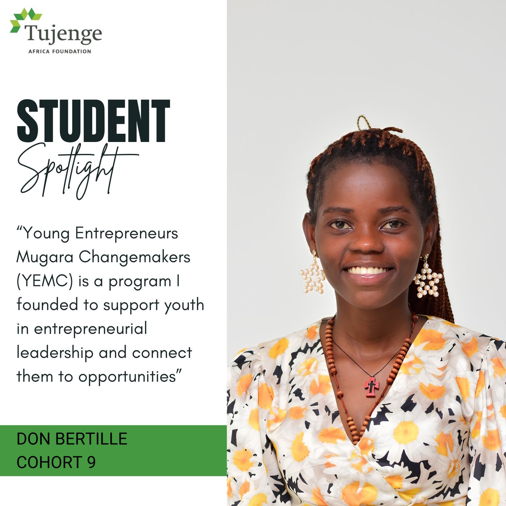
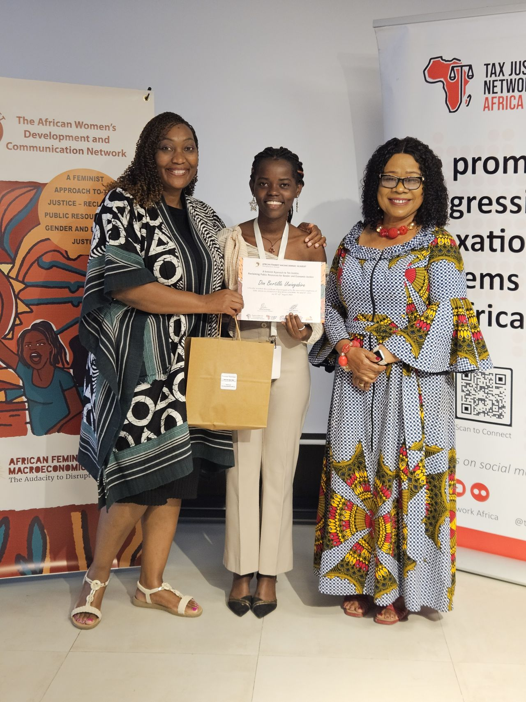

YEMC Begins
Don Bertille founded YEMC to work with the youth of Mugara and strengthen skills that are not always taught in school.
Founder Story
CEO and Founder of YEMC, Tujenge Scholar, entrepreneur, youth empowerment advocate, YALI RLC alumna, and changemaker from Rumonge, Burundi.

CEO & Founder
Don Bertille Uwingabire is the CEO and Founder of Young Entrepreneurs Mugara Changemakers (YEMC), a youth-led initiative serving Mugara, Rumonge, Burundi.
She studied at Kigutu International Academy, a school developing a new generation of problem-solvers, change-makers, and entrepreneurial leaders for Burundi and beyond.
From the beginning, Don Bertille has been at the forefront of leadership. Through YEMC, she shares the knowledge and opportunities she has gained with young people in her community who have not had the same access.

“The program started in July 2025. I created this program because I had participated in many leadership programs and wanted to share my knowledge with people in my community who did not have the same opportunities.”
Don Bertille Uwingabire
YEMC Impact
Don Bertille founded YEMC to work with the youth of Mugara and strengthen skills that are not always taught in school.
YEMC fundraised and supported 20 girls and 20 unemployed single mothers with reusable sanitary pads and food allowances.
YEMC trained 50 young people in personal development and design thinking, encouraging them to improve themselves and their community.
Force For Good
YEMC is proud of the progress already being made in Mugara, Rumonge, Burundi, and remains committed to helping young people lead change without waiting for others to take action.